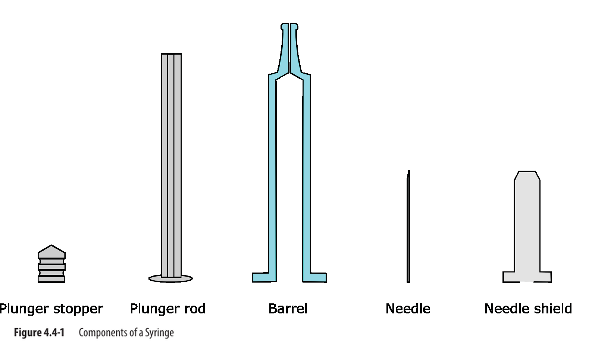

本節學習目標
- 掌握預充填注射器 (PFS) 在美國與歐盟的法規定位，理解「組合產品 (combination product)」的監管架構與 PMOA 原則
- 理解 PFS 三大關鍵系統功能：治療病患、取得市場許可、生產與配送藥物遞送系統
- 瞭解藥廠與供應商在 DMF 申請中各自的角色與責任，包括 Type III 及 Type V DMF 的適用情境
- 掌握 CTD Module 3 中 PFS 組合產品所需的申請內容要素，包括設計管控、相容性、穩定性及 CCI 要求
- 認識適用於 PFS 開發的主要標準與技術參考文獻體系
原文內容 Original Text
This section discusses considerations for planning the development of the PFS and eventual marketing approval.
A developer of a PFS must define its purpose, evaluate the supplier, and adhere to regulatory and marketing requirements. For example, in the United States, a finished PFS is considered a combination product and regulated by the Center for Drug Evaluation and Research (CDER), the Center for Biologics Evaluation and Research (CBER), or the Center for Device and Radiological Health (CDRH) of the U.S. FDA, depending on its primary/principal mode of action (PMOA). Based on the same principle of PMOA, products in the European Union (EU) that incorporate or administer a drug may be regulated as either medical devices or medicinal products as the term combination product per se does not exist yet in EU regulations. A container/closure (C/C) system, such as a PFS used in the packaging of a medicinal product for human use, is approved as part of the medicinal product application.
導師解析 Tutorial Commentary
核心概念解析 Key Concepts
Combination Product（組合產品）：PFS 在美國被定性為「組合產品」，因為它同時具有藥品（drug）和醫療器材（device）的特性。監管主導機構取決於 PMOA（主要作用模式）：
- CDER：主導小分子藥物 PFS
- CBER：主導生物製品 PFS（如單株抗體、疫苗）
- CDRH：當器材功能為主時
歐盟情況：EU 目前沒有「combination product」的明確定義，PFS 依主要功能歸類為藥品或醫材，受 Directive 2001/83/EC 或 MDD 93/42/EEC 管轄。
比喻說明 Analogy
想像你開發了一種「預裝咖啡的保溫杯」。監管機關會問：這個產品的主要功能是「咖啡（藥品）」還是「保溫杯（器材）」？如果主要目的是讓咖啡安全到達消費者手中（藥品功能主導），就由食品局管；如果主要賣點是保溫功能，就由消費品安全委員會管。PFS 的 PMOA 判斷就是這個邏輯 — 誰主導，誰審。對 CDMO 而言，這個判斷在接受委託開發前就必須釐清，直接影響法規策略與申請時程。
重點提示 Key Notes
CDMO 實務影響：作為受託製造方，必須在合約中明確規定由 License Holder（藥廠）負責確認 PMOA 及主管機關，CDMO 不應自行假設。不同主管機關的 cGMP 要求（21 CFR 820 vs 21 CFR 211）對廠房認證、文件體系影響巨大。
練習思考 Practice Questions
- 一支含有胰島素的預充填注射器，其 PMOA 如何判定？會由 CDER 還是 CBER 主管？
- 為什麼歐盟沒有「combination product」的正式定義對 PFS 開發者而言是一個挑戰？
原文內容 Original Text
In order to have a comprehensive understanding of the PFS up to the end of its shelf life, it is necessary to consider the ability of the PFS to provide an integral C/C system and to consider the interaction of the related subsystems. These considerations should support the goal of treating the patient, obtaining market approval for a drug, and producing and supplying the drug delivery system. These three goals holistically comprise the key system functions of the PFS life cycle.
3.1.1 Key System Function: Treating the Patient
The ultimate purpose of the PFS subsystem is to contain the drug and administer the expected dose within the expected timeframe to the patient. Administration of the drug delivery system is achieved through various avenues, such as the following:
- self-administration with a plunger rod PFS or with additional device accessories
- healthcare provider administration with or without safety systems
Subsequently, to ensure proper administration of the drug, it is necessary to address multiple factors when treating the patient. Factors include the following:
- drug dose volume, viscosity, and temperature
- duration of injection
- targeted tissue and route of administration
- injection technique (pinch, angle, or region)
3.1.2 Key System Function: Enabling Market Approval
The license holder must generate a comprehensive data package to ensure the suitability of the PFS for the intended use as prescribed by various regulatory authorities, such as the FDA and European Medicines Agency, and in accordance with applicable guidance documents to receive regulatory approval for the drug product.
導師解析 Tutorial Commentary
核心概念解析 Key Concepts
PFS 三大關鍵系統功能：
- 治療病患：確保藥品在正確時間、正確劑量、正確途徑到達目標組織
- 取得市場許可：提供完整的資料包，證明 PFS 適用於預期用途
- 生產與配送：確保系統與充填、組裝、配送流程相容
這三個功能並非獨立存在，而是相互制約。例如：為了治療病患所選擇的高黏度製劑，可能對充填製程（生產功能）和注射力道（人體因素）產生重大影響。
重點提示 Key Notes
影響注射的關鍵變數：藥液黏度 (viscosity) 直接影響注射時間和所需推桿力。對蛋白質藥物（如單株抗體）而言，高濃度製劑的黏度往往是開發挑戰，這在 3.1.1 提到的「duration of injection」和「injection technique」因素中有所體現。
License Holder 的資料責任：3.1.2 強調 license holder 必須生成「comprehensive data package」。對 CDMO 而言，需在服務協議中明確哪些數據由 CDMO 生成、哪些由 License Holder 負責整合提交。
練習思考 Practice Questions
- 如果一個單株抗體 PFS 產品的黏度非常高（>50 cP），這會如何同時影響三個關鍵系統功能？
- 為什麼需要同時考慮「自我注射」和「醫護人員注射」兩種情境？這對 PFS 設計有何影響？
原文內容 Original Text
To produce and distribute the combined drug and delivery system, the system should be:
- compatible with the filling and inspection process, including the plunging process (e.g., Ventube™ or vacuum)
- compatible with the assembly process (plunger rod insertion, labeling, and secondary packaging)
- suitable for delivery to end users, including factors such as cold chain requirements, transport conditions (shock, vibration, and pressure), and protection provided by the secondary and tertiary packaging
Table 3.1.3-1 below provides a high-level view of the interactions between subsystem components or stakeholders in relation to key system functions.

Figure 3.1: PDA TR73 Section Structure — Section 3.0 PFS Development & Licensing within the broader TR73 framework (PDF p14)
導師解析 Tutorial Commentary
核心概念解析 Key Concepts
Ventube™ / Vacuum 灌塞法：活塞插入（plunging）有兩種主要方法。Vacuum plunging 在低壓環境下插入活塞，可有效避免注射器內殘留空氣，對某些敏感藥品（如蛋白質製劑）至關重要。選擇何種方法直接影響設備投資和製程驗證策略。
三層包裝的冷鏈保護：
- 一次包裝 (primary)：玻璃管身 + 活塞 + 針頭護套
- 二次包裝 (secondary)：泡殼或托盤，提供機械保護
- 三次包裝 (tertiary)：外箱，用於配送運輸
比喻說明 Analogy
PFS 的生產相容性就像「食品工廠的包裝線設計」。如果你開發了一種特殊形狀的果凍，但現有的充填機無法處理這種形狀，你就面臨兩個選擇：重新設計果凍（修改產品設計）或購買新設備（增加資本投入）。對 CDMO 而言，在評估新客戶產品時，首先要確認現有充填線與目標 PFS 規格的相容性 — 這是接單可行性評估的第一步。
圖表解讀 Figure Analysis
Section 3.0 在 TR73 中的位置圖（fig-p14-1）顯示本節（3.0 PFS Development & Licensing）是整份技術報告的「起點」，周圍是 4.0 Human Factors、5.0 E&L、6.0-8.0 Glass/Needle、9.0 Cosmetic、10.0 Siliconization、11.0 Plunger Stopper、12.0 CCI、13.0 Manufacturing、14.0 Drug Compatibility 等各主題節。這個結構圖傳達了一個重要訊息：開發決策（Section 3）會牽動後續所有技術節的考量，必須從整體生命週期視角規劃。
練習思考 Practice Questions
- 若一個客戶要求使用 Vacuum plunging 工藝，但 CDMO 現有設備只支援 Ventube™，應如何在合約談判階段評估這個需求？
- 冷鏈產品（如需 2-8°C 儲存的生物製品）的二次和三次包裝設計需要考慮哪些額外的驗證要求？
Table 3.1.3-1: Overview of Interactions Between Key System Functions & Components in the PFS Life Cycle
各關鍵系統功能與 PFS 生命週期中相關組件/利害關係人的交互關係總覽
| Key System Functions 關鍵系統功能 | Contributors and Stakeholders 貢獻者與利害關係人 | |||||
|---|---|---|---|---|---|---|
| Drug 藥品 | PFS Subsystem PFS子系統 | Fill/Finish Manufacturing Equipment 充填/完成製造設備 | Ancillary Devices 輔助裝置 | Distribution 配送 | Patient 病患 | |
| Treating the Patient 治療病患 | ||||||
| Allows the transfer of the expected dose within the expected time frame in the targeted tissue 在目標組織中於預期時間內輸送預期劑量 | • | • | • | • | ||
| Contains drug 容納藥品 | • | • | • | |||
| Obtaining Approval for Drug 取得藥品許可 | ||||||
| Adequately protect the dosage form 充分保護劑型 | • | • | • | • | • | |
| Composed of materials that are considered safe 由被認定安全的材料組成 | • | • | • | |||
| Producing and Delivering the Drug Delivery System 生產與配送藥物遞送系統 | ||||||
| Be compatible with the filling and inspection process 與充填及檢驗製程相容 | • | • | • | |||
| Be compatible with the assembly process 與組裝製程相容 | • | • | • | |||
| Be suitable for delivery to end user 適合配送至終端使用者 | • | • | • | |||
- "Drug" refers to the medicine delivered in the PFS.
- The PFS subsystem includes a packaged glass barrel with an attached needle that is protected with a needle shield and a plunger stopper.
- "Manufacturing equipment" refers to the different machines used to process the subsystem to produce a full drug delivery system. Tasks include filling, stoppering, inspecting, or preparing secondary packaging.
- Ancillary devices include autoinjectors, safety devices, plunger rods, backstops, and other assistive devices.
- "Distribution" refers to the outbound distribution channel from the license holder to the patient.
- The patient is the person who ultimately receives the treatment.
原文內容 Original Text
The following sections provide considerations for manufacturer, supplier, instructions for healthcare provider, regulatory submission/eCTD content format, standards, and technical references applicable to the PFS.
3.2.1 Manufacturer Considerations
A drug product manufacturer must follow the marketing requirements in the country where the product is marketed. In the United States, a PFS is considered to be a combination product as defined by 21 CFR 3.2(e). These combination products are assigned to the lead center based on the PMOA. Both CDER and CBER provide guidance on PFS drugs and biologics.
Drug manufacturers must comply with cGMPs to ensure that the PFS product is safe and efficacious. Each constituent part of the PFS product is subject to its applicable cGMP requirements. The device constituent is subject to the quality system regulations for devices as described in 21 CFR 820, whereas the drug or biological product constituent is subject to the regulations under 21 CFR 211. For biological products, the regulations described in 21 CFR 610 also apply. The cGMP requirements for combination products are codified under the final rule in 21 CFR 4, which provides guidelines on how to achieve compliance under one operating principle with additional provisions under another. These include:
- demonstration of compliance with all cGMP regulations applicable to each of the constituent parts included in the combination product, or
- demonstration of compliance with either the drug cGMP or the quality system regulations for devices, and with provisions that are not shared by both regulations
Products that incorporate a drug or administer a drug may be regulated in the European Union as either medical devices or medicinal products, depending on the principal intended function of the product and the method by which this function is achieved. PFSs are categorized as devices for administering a medicinal product when the device and the medicinal product form a single integral product designed for exclusive use in the given combination, and the device is not reusable or refillable. These products are covered by the regulations for medicinal products, such as Directive 2001/83/EC. However, relevant essential requirements in Annex 1 of Medical Devices Directive (MDD) 93/42/EEC apply to the safety and performance-related features of the device. Guidelines related to drug delivery products regulated as medicinal products, such as PFSs, are provided in medical devices guidance document MEDDEV 2.1/3, Revision 3.
Following standards like ISO 13485 (Medical Devices – Quality Management Systems) and ISO 14971 (Medical Devices – Application of Risk Management to Medical Devices) will allow companies to demonstrate compliance with Annex 1 of the MDD.
導師解析 Tutorial Commentary
核心概念解析 Key Concepts
21 CFR 4 的「一主一輔」合規原則：對 PFS 組合產品，21 CFR 4 提供兩種合規路徑：
- 全合規路徑：同時滿足 21 CFR 211（藥品）和 21 CFR 820（器材）的所有要求
- 精簡路徑：選擇其中一套為主要依循，再補充另一套中不重疊的要求
21 CFR 820 特別要求的「額外規定」包括：management responsibility（管理層責任）、design controls（設計管控）、purchasing controls（採購管控）、CAPA（矯正與預防措施）。
比喻說明 Analogy
21 CFR 4 的合規策略就像「跨國工作簽證」。若你同時在台灣和日本工作，有兩種方式：一是取得兩個國家的完整工作許可（全合規路徑，成本最高但最保險）；二是以一個國家的許可為主，再補辦另一國要求的特定附加文件（精簡路徑，適合主要在一個司法管轄區運作的廠商）。CDMO 在接受組合產品委託前，必須與 License Holder 確認採用哪種合規策略，因為這直接影響品質系統建置的成本與時程。
重點提示 Key Notes
ISO 13485 vs 21 CFR 820：ISO 13485 是歐盟 MDD 認可的品質管理系統標準，在全球多個市場廣泛接受。21 CFR 820 是美國 FDA 的器材品質系統法規。兩者高度相似但有差異。CDMO 若已取得 ISO 13485 認證，在進入 EU 市場時具有明顯優勢。
ISO 14971 風險管理：此標準要求廠商對器材的整個生命週期進行系統性風險管理，需產生完整的風險管理檔案 (Risk Management File)，與 ICH Q9 的 QRM 原則高度互補。
練習思考 Practice Questions
- 一家台灣 CDMO 要接受美國客戶的單株抗體 PFS 委託製造，需要同時符合 21 CFR 211 和 21 CFR 820 的哪些特定要求？
- 歐盟 Directive 2001/83/EC 與 MDD 93/42/EEC 對 PFS 的適用範圍如何區分？
原文內容 Original Text
Suppliers of PFS components can include information related to the manufacturing of the syringe, needle, and accessory components in the drug master file (DMF) for applications submitted to the FDA in the United States. The manufacturer's supplier agreement should define the roles and responsibilities of each party. In other countries, such information may be submitted in the marketing application dossier to the health authorities. Additionally, filing requirements for different regulatory agency jurisdictions may vary, and applicants should be aware of the proper procedures for the intended market.
Elements to be included in the DMF include:
- overall description of the C/C system, packaging component diagram, dimensional specifications
- information on the manufacturing and processing facility (washing, siliconization, sterilization, and environmental controls)
- component suppliers [of glass barrels, ceramic paint, plunger stoppers, needles, silicone, needle adhesive, needle shields, plunger rods, flange extenders, or backstops]
- suitability (protection from light, compatibility, and sterility) and component safety
- quality controls during syringe barrel manufacture, lubrication, needle assembly, sterilization, and transport
- stability of syringe components without any product, and a list of regulatory requirements fulfilled, plus revalidation plan
- mechanism for communication of quality issues and customer notification
Elastomeric closure components for PFS systems (e.g., tip caps and plunger stoppers) must meet current U.S. and European regulatory requirements for compendial compliance. Component suppliers should ensure that adequate information is provided to the health authorities for proper review of sponsors' drug applications, including:
- elastomer formulation ingredients and appropriate certifications (e.g., BSE/TSE, dry natural rubber latex, and animal-derived raw materials)
- compendial testing results for physicochemical properties
- biological reactivity assessment
In the United States, suppliers typically elect to compile this information in a Type III DMF.
In some instances, post-processing of elastomeric components (e.g., washing or sterilization) may be performed by a third party, such as the component supplier. In such cases, adequate supporting data should be made available to enable proper agency review of these processes. This information can be contained within a Type V DMF in the United States and should include supporting information on process validation, process controls, testing, and packaging qualification.
As DMF owners, suppliers can provide sponsors with letters of authorization to applicable DMFs for use in sponsor applications. Per 21 CFR 314.420(c), suppliers in the United States are required to notify their letter of authorization holders when significant changes are made to the DMFs. Refer to 21 CFR 4 for further guidance on compliance with design control expectations.
導師解析 Tutorial Commentary
核心概念解析 Key Concepts
DMF 類型對照：
- Type III DMF：包裝材料（如彈性體封口元件）—— 涵蓋橡膠配方、BSE/TSE 認證、理化特性及生物反應性測試
- Type V DMF：FDA 接受的特定製造設施、製程或文章 —— 供應商對彈性體元件進行後處理（如清洗、滅菌）時，相關製程驗證資料可放入此類型
授權信函 (Letter of Authorization)：DMF 擁有者（供應商）授權藥廠（sponsor）在其申請案中引用該 DMF 的機制。一旦 DMF 有重大變更，供應商必須主動通知所有授權信持有人。
比喻說明 Analogy
DMF 制度就像「建材供應商提交給建管局的技術規格檔案」。你要蓋一棟建築，不需要親自測試每一根鋼筋的品質 —— 你引用鋼筋廠商已預先提交給建管局的材料認證檔案（DMF），並取得廠商的「授權使用書」（Letter of Authorization）即可。若鋼筋廠商後來更換了鋼材配方（DMF 重大變更），他們必須通知所有使用其授權書的建築業者 —— 這就是 21 CFR 314.420(c) 的精神。對 CDMO 而言，在供應商合約中明確要求「DMF 重大變更需提前 X 天通知」是風險管控的基本要求。
重點提示 Key Notes
BSE/TSE 認證的重要性：牛海綿狀腦病 (BSE) / 傳播性海綿狀腦病 (TSE) 認證是生物來源原料的必要文件。彈性體元件（如橡膠活塞）的配方中若含有動物來源成分，必須提供相關認證，這是 EU 和 FDA 的共同要求。
CDMO 在供應鏈管理中的角色：當 CDMO 採購 RTU（即用型）的已清洗/已滅菌元件時，需確認供應商是否已在其 DMF 中涵蓋後處理製程的驗證資料。若供應商使用 Type V DMF 涵蓋這些製程，CDMO 需取得相應授權。
練習思考 Practice Questions
- 若 CDMO 採用 RTU 的預清洗活塞，供應商提交了 Type V DMF，CDMO 在申請材料中需要如何引用這個 DMF？
- 供應商的 DMF 發生「重大變更」，CDMO 應在多快時間內評估其對現有客戶產品的影響？應建立什麼樣的 SOP？
原文內容 Original Text
The license holder must provide healthcare providers with instructions for use and disposal of PFSs. Needlestick injuries have the potential to expose PSF users, such as healthcare providers, to blood-borne pathogens. The Occupational Safety and Health Administration (OSHA) and Centers for Disease Control and Prevention (CDC) guidelines describe the requirements and practices in the United States to prevent such injuries. The disposal requirements for PFSs may vary between countries, and suggested storage conditions for the PFSs should be followed.
導師解析 Tutorial Commentary
核心概念解析 Key Concepts
使用說明書 (Instructions for Use, IFU) 的法規要求：License Holder 有義務提供完整的 IFU，內容必須涵蓋：正確使用步驟、棄置要求（針頭廢棄物管理）、儲存條件。各國棄置法規不同，IFU 必須針對目標市場個別化。
針刺傷害預防：OSHA 和 CDC 均有相關指引。主動安全注射器（active safety syringes）和被動安全系統的設計目的之一即為降低針刺傷害風險，這與 Section 4.0 Human Factors 高度相關。
重點提示 Key Notes
台灣廠商的注意事項：台灣的醫療廢棄物處置受衛生福利部規範，與美國 OSHA 要求不同。若 CDMO 協助客戶開發台灣市場的 IFU，需確認符合台灣本地法規要求，而非直接套用美國版本。
CDMO 的責任範圍：IFU 的撰寫通常由 License Holder 負責。CDMO 應確認合約中清楚界定 IFU 責任歸屬，避免因此承擔未預期的法規責任。
練習思考 Practice Questions
- 若同一 PFS 產品需要在美國、歐盟和台灣三個市場上市，IFU 需要有幾個版本？各版本的主要差異可能在哪裡？
原文內容 Original Text
In the United States, the marketing application for PFS combination products could be a new drug application (NDA), or a biologic license application (BLA), depending on whether the product is defined as a drug or biologic. Proprietary information about the device can be submitted in a master file and in letters of authorization to the master file provided in the application. Important considerations for evaluating human factors affecting the use of the PFSs include the intended patient population for the proposed indication and the condition of use, and whether the PFS is self-administered or administered by a healthcare provider.
The application should contain:
- a description of the dosage form, composition, primary C/C system, and any ancillary component/plunger rod information
- manufacturing and processing facility information
- description of all primary packaging components (syringe barrel with staked needle, adhesive used to bond the needle to the glass tip of the barrel, needle shield, and plunger stopper) with drawings, specifications, quality details, and supplier information
- description of the manufacturing process, including lubrication of the primary packaging components and material/components inspection, in-process controls, and release operations (in the supplier's DMF)
- additional details on validation of syringe marking process if syringe markings and fill lines are present
- a summary containing details of the sterilization method and validation providing a sterility assurance level of 10⁻⁶
- evaluation of the integrity and compatibility of the C/C system
- assessment of the potential for leachables and particulates due to interaction of the syringe components with the product
- assessment of the impact of shipping on the C/C system
PFSs have the potential to introduce new impurities or components, such as adhesive, tungsten, and silicone, which can impact product quality. The impact of such components should be carefully assessed. Syringe barrels and plunger stoppers are typically siliconized for use in PFS applications. A thorough assessment of the impact of component variability on product quality and stability is performed. Stability data to demonstrate that the commercial C/C system does not affect product stability is required. Temperature is a general concern given that most protein drugs are quite labile. Moisture is a concern for lyophilized dosage forms in syringes (or vials).
The final finished product after filling and assembling should be tested for performance. Testing of the PFS includes testing of delivered (extractable) volume, break-loose and glide forces, and CCI. In addition, a range of physicochemical and microbiological parameters should be tested.
In Europe, the marketing application could be a medicinal product application. At the time of this writing, the FDA and European Commission have not published guidance on the electronic version of the common technical document (CTD) for devices that are part of a combination product. A template for ICH CTD Module 3 is attached (refer to Appendix I) as a guide for providing information about a drug delivery device in a BLA/NDA. An example of a completed CTD Module 3 of a combination product application is provided in Appendix II.
導師解析 Tutorial Commentary
核心概念解析 Key Concepts
NDA vs BLA 的選擇：
- NDA（新藥申請）：適用於化學合成藥物 PFS，主導機關通常為 CDER
- BLA（生物製品許可申請）：適用於生物製品 PFS（抗體、疫苗等），主導機關為 CBER 或 CDER（視產品類型）
Tungsten（鎢）污染的重要性：在製造注射針頭時，鎢針芯（tungsten pin）用於形成玻璃管的出口孔，之後移除。殘留的鎢氧化物可能與蛋白質藥物（如抗體）反應，誘發蛋白質聚集（aggregation）—— 這是一個直接影響產品安全性的關鍵品質問題。
SAL 10⁻⁶ 的法規要求：無菌保證水準 (Sterility Assurance Level) 10⁻⁶ 意謂每百萬件產品中非無菌品的機率不超過 1 件。這是 PFS 滅菌驗證的基本法規門檻。
比喻說明 Analogy
CTD Module 3 對 PFS 的申請內容，就像「房屋交屋時的完整文件包」。你蓋了一棟房子（製造了 PFS），要取得使用執照（市場許可），必須提交：建材規格（包裝元件說明）、施工圖（製程圖）、防火驗收（滅菌驗證）、防水測試（CCI 評估）、環境安全評估（E&L 研究）、結構安全報告（穩定性數據）。每一份文件對應到 CTD Module 3 的一個章節。對 CDMO 而言，熟悉這個「文件地圖」能幫助在接受委託時精準評估需要產生哪些數據，並在合約中明確分工。
重點提示 Key Notes
Break-loose 和 Glide Force 測試：
- Break-loose force（啟動力）：初次推動活塞所需的力，通常高於持續推動力
- Glide force（滑動力）：活塞在持續移動過程中的阻力
這兩個參數直接影響使用者體驗和劑量準確性，是 PFS 放行測試的必要項目，也受矽化（siliconization）程度影響。
矽化（Siliconization）的雙面性：矽油提供潤滑（降低 glide force），但同時可能導致矽油顆粒污染藥液，對蛋白質藥物引發免疫反應。矽化量的控制需要精確優化，詳見 TR73 Section 10.0。
練習思考 Practice Questions
- 一個凍乾 (lyophilized) 藥物的 PFS 版本在穩定性測試中需要特別監測哪些指標？水分控制的關鍵點在哪裡？
- 若在 E&L 研究中發現鎢含量偏高，有哪些可能的解決方案？（考慮設計、製程和規格三個層面）
- Break-loose force 規格的設定應考慮哪些使用情境？（自我注射 vs 自動注射器）
原文內容 Original Text
A C/C system (constituent parts of a combination product), such as a PFS used in the packaging of a human drug or biologic, is approved as part of the drug application. A successful licensure application requires multiple tests and studies according to various industrial and compendial standards to demonstrate the suitability of the selected C/C system, which can be validated for its intended use based on the target product profile.
Suitability is defined in the United States to cover four aspects: protection, safety, compatibility, and performance, according to the FDA.
Different regulatory bodies may recognize different standards. Appendix III lists the standards, guidance, compendial methods, and technical reports to assist with the development of a PFS combination product. The FDA recognizes consensus standards, and EU harmonized standards are available online. The various testing standards help ensure regulatory compliance. Other PDA technical reports provide useful information related to sterilization, CCI test methods, and glass defects.
導師解析 Tutorial Commentary
核心概念解析 Key Concepts
PFS C/C System 適用性四要素：FDA 定義的四個評估面向：
- Protection（保護性）：能否保護藥品免受外部污染（微生物、環境）
- Safety（安全性）：包裝材料本身不會對病患造成傷害（E&L 安全評估）
- Compatibility（相容性）：包裝材料與藥品之間不發生不良相互作用（不吸附、不催化降解）
- Performance（性能）：能正常執行預期功能（功能性測試，如注射力、CCI）
Target Product Profile (TPP)：目標產品概況是開發早期定義「理想產品應該是什麼樣子」的文件，驅動後續所有開發決策，包括 C/C system 的選擇與驗證策略。
重點提示 Key Notes
TR73 與其他 PDA 技術報告的關聯：Section 3.2.5 提及其他 PDA TR 提供滅菌、CCI、玻璃缺陷相關資訊。主要關聯：
- 滅菌：PDA TR1（輻射滅菌）、TR22（過濾滅菌）、TR26（蒸汽滅菌）
- CCI：PDA TR27（微生物 CCI 測試）、TR51（確定性 CCI 測試）
- 玻璃缺陷：PDA TR43（玻璃容器製造）
在台灣 CDMO 的實務中，建議建立這些 TR 的內部學習資源庫（如本知識平台），讓工程師在遇到特定問題時能快速找到對應參考文獻。
實務應用 Practical Application
CDMO 的標準文件矩陣建議：在接受每個新 PFS 委託時，建議建立一個「適用標準矩陣」，對應 FDA 四要素：
- Protection：CCI 測試方法選擇 → PDA TR51/TR27
- Safety：E&L 研究計畫 → ICH Q3C/Q3D + USP <661>
- Compatibility：藥品-包材相容性研究 → USP <1664> + PDA TR26
- Performance：功能性測試 → ISO 11040 系列
這個矩陣可作為技術審查會議的基礎文件，確保在開發早期就識別所有必要的測試項目。
練習思考 Practice Questions
- 為什麼「compatibility（相容性）」和「safety（安全性）」在概念上不同，但在實務研究中又高度相關？各自需要哪些測試支撐？
- 一個蛋白質生物製品 PFS 的 Target Product Profile 中，關於 C/C system 的主要需求可能包括哪些？
本節重點回顧 Section Summary
- 法規定位：PFS 在美國為組合產品，由 PMOA 決定主管機關（CDER/CBER/CDRH）；21 CFR 4 提供「一主一輔」的雙重 GMP 合規路徑
- 三大系統功能：治療病患（劑量、給藥途徑）、取得市場許可（完整資料包）、生產與配送（製程相容性與冷鏈）— 三者相互牽動，必須整體規劃
- DMF 架構：Type III DMF 涵蓋彈性體元件的材料資訊；Type V DMF 涵蓋後處理製程驗證；授權信函機制確保供應鏈資訊流通
- 申請內容要素：SAL 10⁻⁶ 滅菌驗證、CCI 評估、E&L 研究（特別注意鎢、矽油、黏合劑）、break-loose/glide force 測試是 PFS 申請的核心數據
- C/C 適用性四要素：Protection、Safety、Compatibility、Performance — 此框架應貫穿 PFS 開發的整個生命週期，從 TPP 定義到放行測試均需對應